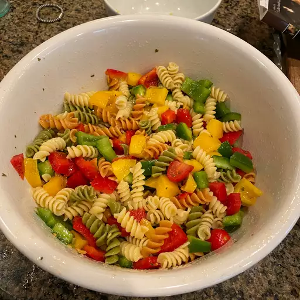

Pasta Salad

Description
This easy pasta salad recipe comes together quickly with convenient ingredients and colorful vegetables.
Ingredients:
- Pasta
- Dressing
- Seasoning mix
- Vegetables
Steps:
- Cook and drain the pasta.
- Whisk the dressing with the seasoning mix.
- Combine the pasta with the vegetables, then toss in the seasoned dressing.
Other Recipes: